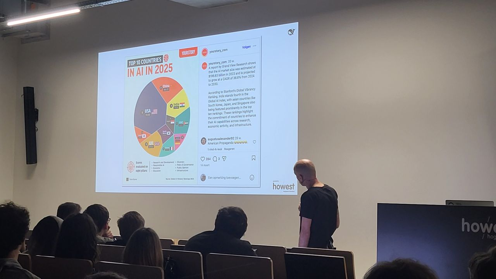
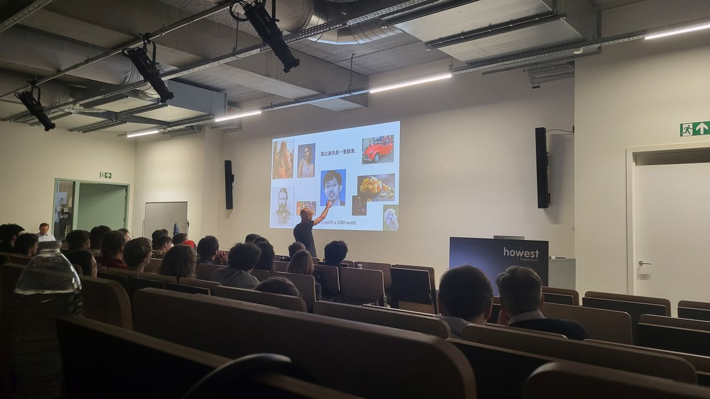

Tech & Meet
DeepSeek, AI-unicorns en de opkomst van China’s AI-ecosysteem
Op 9 december woonde ik een interessante Tech & Meet bij van HOWEST Hogeschool West-Vlaanderen. De sessie werd gegeven door Dimitri Casier en ging over DeepSeek en de snelle groei van het Chinese AI-ecosysteem.

Tijdens de avond werd duidelijk dat de Verenigde Staten vandaag nog steeds een sterke voorsprong hebben in AI, met bedrijven zoals OpenAI en Google. Toch groeit China enorm snel. DeepSeek is daar een goed voorbeeld van: een jong AI-bedrijf dat met slimme optimalisatie, efficiënte architecturen en sterke engineering de grote spelers weet uit te dagen.
Er werd ook gesproken over AI-unicorns. Veel nieuwe unicorns zijn actief in artificiële intelligentie, waarbij vooral de Verenigde Staten en China de leiding nemen. Dit toont aan hoe belangrijk AI geworden is voor de wereldeconomie.
Een belangrijke les uit de presentatie was dat minder rekenkracht niet altijd een nadeel hoeft te zijn. Beperkingen kunnen net leiden tot innovatie en efficiëntere oplossingen.
Kortom, deze Tech & Meet gaf een duidelijk beeld van hoe snel de AI-race evolueert en hoe bedrijven zoals DeepSeek de toekomst van AI mee vormgeven.